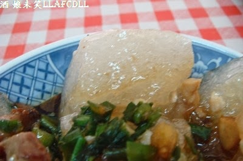

這家名為"湯家肉圓"的店,
讓我一直想去一探究竟~~
便趁今天中午來探險一下~~
進入店家,
看了價目表,
也看了一下店內的油鍋,
發現店家的產品與"湯家大肉圓"大同小異,
不過,店家有賣肉羹飯欸~~
我上次去"湯家大肉圓",就一直覺得她們家的肉羹很下飯,
實在是應該順便賣肉羹飯才是~~
沒想到,這家店有賣~~
肉圓(25元)br
我這一次先叫一顆來試試,
老闆一樣會給客人兩隻小叉子,
我覺得蠻好用的~~
老闆會問你要不要加辣,
我說不辣~~
(迷之音: 真是稀奇~~ )br
肉圓上方一樣是灑上蔥花醬油,
不過,店家的醬油比較不會那麼鹹,
我比較愛這家的醬油.

肉圓的包法與湯家大肉圓一樣,
也是有一部份比較厚,
一些部份比較薄,
不過,以Q度來講,我比較愛這一家的皮,
感覺比較有嚼勁~~
肉圓裡面一樣是包肉,竹筍丁,豆乾末,
肉很紮實,口味蠻好吃的,
裡面有3-4塊,比湯家大肉圓多1-2塊,
筍丁與豆干末的味道,倒是兩家差不多~~
整體而言,我比較愛這家的肉圓~~
熱狗(一份三條/30元)
苗栗的熱狗,就是俗稱的"甜不辣"~~
因為覺得肉圓還不錯吃,
後來才加點的產品,
這一次,我有請老闆幫我加辣~~
熱狗上面一樣是灑上蔥花醬油,
味道不會過鹹,剛好提味~~
熱狗的味道,就是那個味道,
(你知道的~~ )
只是,這碗熱狗讓我比較驚豔的是,
店家的辣椒應該也是市售辣椒醬,
只是,味道比較好吃,
不僅不會死鹹,味道也夠辣~~
用餐結束後,經我詢問店員,她說他們家的老闆是"湯家大肉圓"的孫子,
是自己出來另外開店的,
這讓我想起難怪"湯家大肉圓"要強調自己僅有的一家店.
雖然是孫子另外出來開的店,
不過,我倒是比較喜歡這家的味道~~
大家可以兩家都去試試,
看哪一家比較合自己的口味吧~~
=============
98/11/19更新
今天又來店家外帶紅豆湯,
一袋是25元~~
裡面有紅豆,花豆,粉粿.
紅豆湯喝起來不會太甜,
紅豆,花豆煮得很軟爛,
粉粿軟Q,還不錯吃~~
店家的紅豆湯C/P值蠻高的,
若是想吃紅豆湯,
下次應該還是會來店家外帶~~
===================
100/7/11 更新
店家目前搬到苗栗市至公路128號.
謝謝豬妹妹提供的情報!
=======================
店名: [苗栗苗栗] 湯家肉圓
地址: 苗栗縣苗栗市至公路128號(新地址)
電話: 037-268669
營業時間: 早上10:00--晚上8:00(每個月第二週禮拜二,第四週星期天公休)
停車: 機車,汽車皆易
引用文章:酒娘未笑